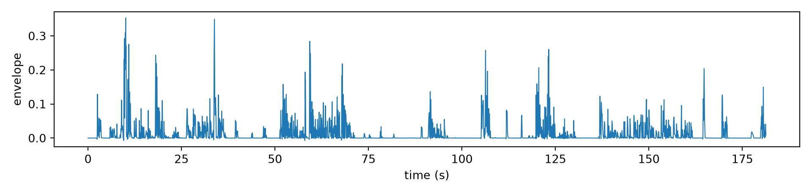

import os, re, glob
import numpy as np
import pandas as pd
import matplotlib.pyplot as plt
CORPUS = "../.."
acoustics = f"{CORPUS}/TS_acoustics"
meta_path = f"{CORPUS}/data/Intake_Survey/cleaned_curated_Intake_Session_new.csv"
data_path = f"{CORPUS}/data/Conversations"
def extract_pid(filename):
match = re.search(r"PID_\d+", filename)
return match.group() if match else None
def mask_from_spans(spans, time):
m = np.zeros(len(time), dtype=bool)
for on, off in spans[["onset", "offset"]].itertuples(index=False):
m |= (time >= on) & (time <= off)
return mCheatsheet: Loading the PARSEL Corpus
MDIG2026
Setup
library(tidyverse)
CORPUS <- "../.."
acoustics <- file.path(CORPUS, "TS_acoustics")Metadata
meta = pd.read_csv(meta_path)
meta.head() Unnamed: 0 Age_part Sex_part ... Accuracy_total globalPID UCMRT
0 0 35 Female ... 5 PID_58 0.0
1 1 41 Male ... 6 PID_59 6.0
2 2 67 Female ... 6 PID_43 9.0
3 3 38 Female ... 6 PID_42 20.0
4 4 64 Male ... 6 PID_26 12.0
[5 rows x 172 columns]Acoustics
Amplitude envelope
time is in milliseconds.
envelope_files = glob.glob(f"{acoustics}/env_*.csv")
pcn = extract_pid(os.path.basename(envelope_files[0]))
env = pd.read_csv(envelope_files[0])
env["time_s"] = env["time"] / 1000.0
print(env.shape)(90660, 5)env.head() time audio ... filename time_s
0 0.0 0.000000 ... conv-self-LPID_1-Batch_10-LPID_2-Batch_10-Batc... 0.000
1 2.0 0.000000 ... conv-self-LPID_1-Batch_10-LPID_2-Batch_10-Batc... 0.002
2 4.0 0.000000 ... conv-self-LPID_1-Batch_10-LPID_2-Batch_10-Batc... 0.004
3 6.0 0.000000 ... conv-self-LPID_1-Batch_10-LPID_2-Batch_10-Batc... 0.006
4 8.0 0.000031 ... conv-self-LPID_1-Batch_10-LPID_2-Batch_10-Batc... 0.008
[5 rows x 5 columns]fig, ax = plt.subplots(figsize=(10, 2.4))
ax.plot(env["time_s"], env["envelope"], lw=0.8)
ax.set_xlabel("time (s)"); ax.set_ylabel("envelope")
plt.tight_layout(); plt.show()
envelope_files <- list.files(acoustics, pattern = "^env_.*\\.csv$", full.names = TRUE)
env <- read_csv(envelope_files[1]) |> mutate(time_s = time / 1000)
head(env)# A tibble: 6 × 5
time audio envelope filename time_s
<dbl> <dbl> <dbl> <chr> <dbl>
1 0 0 0.00000747 conv-self-LPID_1-Batch_10-LPID_2-Batch_10-B… 0
2 2 0 0.00000829 conv-self-LPID_1-Batch_10-LPID_2-Batch_10-B… 0.002
3 4 0 0.00000913 conv-self-LPID_1-Batch_10-LPID_2-Batch_10-B… 0.004
4 6 0 0.00000998 conv-self-LPID_1-Batch_10-LPID_2-Batch_10-B… 0.006
5 8 0.0000305 0.0000108 conv-self-LPID_1-Batch_10-LPID_2-Batch_10-B… 0.008
6 10 0.0000305 0.0000116 conv-self-LPID_1-Batch_10-LPID_2-Batch_10-B… 0.01 F0 and voicing on/offsets
f0 is blank where unvoiced. Rising/falling edges of that give voiced segments.
def voicing_segments(f0_path):
df = pd.read_csv(f0_path)
t = df["time_ms"].to_numpy() / 1000.0
voiced = df["f0"].notna().to_numpy()
edges = np.diff(voiced.astype(int))
onsets, offsets = t[1:][edges == 1], t[1:][edges == -1]
if voiced[0]: onsets = np.r_[t[0], onsets]
if voiced[-1]: offsets = np.r_[offsets, t[-1]]
return pd.DataFrame({"onset": onsets, "offset": offsets})
voicing = []
for f in glob.glob(f"{acoustics}/f0_*.csv"):
p = extract_pid(os.path.basename(f))
seg = voicing_segments(f)
seg["pcn"] = p
voicing.append(seg)
voicing = pd.concat(voicing, ignore_index=True)
print(f"{voicing.groupby(['pcn']).ngroups} trials, {len(voicing)} voiced segments")6 trials, 33990 voiced segmentsvoicing.head() onset offset pcn
0 2.454514 2.628551 PID_1
1 2.680562 2.946618 PID_1
2 3.058641 3.524739 PID_1
3 5.835223 6.093277 PID_1
4 6.207301 6.371335 PID_1vspan = voicing[(voicing["pcn"] == p)]
voiced_mask = mask_from_spans(vspan, env["time_s"].to_numpy())
print(f"{voiced_mask.mean():.0%} voiced")99% voicedvoicing_segments <- function(f0_path) {
df <- read_csv(f0_path, show_col_types = FALSE)
t <- df$time_ms / 1000
voiced <- !is.na(df$f0)
edges <- diff(as.integer(voiced))
onsets <- t[-1][edges == 1]
offsets <- t[-1][edges == -1]
if (voiced[1]) onsets <- c(t[1], onsets)
if (voiced[length(voiced)]) offsets <- c(offsets, t[length(t)])
tibble(onset = onsets, offset = offsets)
}
f0_files <- list.files(acoustics, pattern = "^f0_.*\\.csv$", full.names = TRUE)
head(voicing_segments(f0_files[1]))# A tibble: 6 × 2
onset offset
<dbl> <dbl>
1 2.45 2.63
2 2.68 2.95
3 3.06 3.52
4 5.84 6.09
5 6.21 6.37
6 6.50 6.64OpenSmile
opensmilefiles = glob.glob(os.path.join(data_path, "*", "Features", "OpenSmile", "*.csv"))
os_sample = opensmilefiles[0]
os_df = pd.read_csv(os_sample)
os_df.head() end ... seconds_start
0 0 days 00:00:00.033333333 ... 0.000000
1 0 days 00:00:00.066666667 ... 0.033333
2 0 days 00:00:00.100000 ... 0.066667
3 0 days 00:00:00.133333333 ... 0.100000
4 0 days 00:00:00.166666667 ... 0.133333
[5 rows x 71 columns]Movement
OpenFace
openfacefiles = glob.glob(os.path.join(data_path, "*", "Features", "OpenFace", "*.csv"))
of_sample = openfacefiles[0]
of_df = pd.read_csv(of_sample)
of_df.head() frame face_id timestamp confidence ... AU25_c AU26_c AU28_c AU45_c
0 1 0 0.000 0.98 ... 0.0 1.0 0.0 0.0
1 2 0 0.033 0.98 ... 0.0 0.0 0.0 0.0
2 3 0 0.067 0.98 ... 0.0 0.0 0.0 0.0
3 4 0 0.100 0.98 ... 0.0 0.0 0.0 0.0
4 5 0 0.133 0.98 ... 0.0 0.0 0.0 0.0
[5 rows x 714 columns]